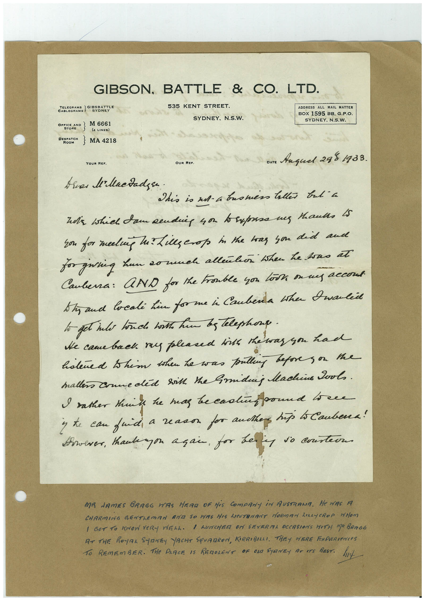

Book 1 · scan 044


Description
Transcription
Context
Review notes
Compare the machine draft with the scan. Handwriting and names need human review.
Artifacts
Edit the artifacts field in this note’s frontmatter to change these records. This summary is generated.
B01-S044-A01 — Letter & Handwritten note — Book 1, scan 044
Types: Typed document, Letter, Handwritten note
Scope: Whole scanned page; individual items can be split out during review.
Caption: Not mapped yet.
Caption source: Not recorded yet.
Caption status: unmapped
Machine transcription
GIBSON, BATTLE & CO. LTD. 535 KENT STREET. SYDNEY, N.S.W. ADDRESS ALL MAIL MATTER BOX 1595 BB. G.P.O. SYDNEY. N.S.W. TELEGRAMS STONET OFFEND 2 M 6661 STORE (4 LINES) DEPOT } MA 4218 ROOM YOUR REF. Dare Anguel 288 1933. This is ad-a bromess tallis trt a son for meeling he? Lies crop in the has you did and for giving hun so much allenkon then he toas at Cauberra: AND for the trouble you look on my accond. Shaud locali kin for me i Cauberda the Dwalie to get into touch both him bs telephone. He came back. ra pleased hits the was you had hatered thim then he was pulling befores or the mallers Conneded sikh the Smiding Machine Pools. I rather theike he mas be cadinbound to ene y te can frid, a reason for authen, hip lo Caubena! However, tankagon açan, for bery so costers MA NAMES BRAGG WAS HERO OF HiS COmPANY iN AUSTRAMA. He was A CHARMING GENTLEMAN AND SO HAS HIS LICUTEMANT HORMAN LILAYCROP MHOM I GOT TO KHON VERY WELL. I LUNCHER ON SEVERITA OCCASIONS WITH MA BRAGG AT THE ROYAL SYDNEY YACHT SQUADRON, KIRRIBALI, THEY WERE EXPERIENCeS TO REMEMBER. THe PARCE IS REDOLENT OF OND SYRNEy AT ATS BEST. hut